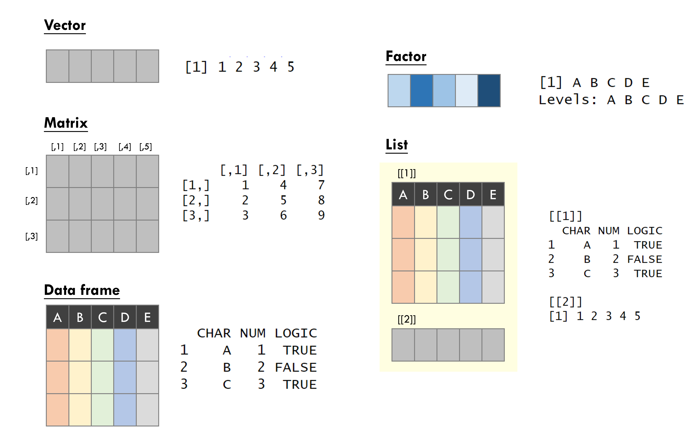
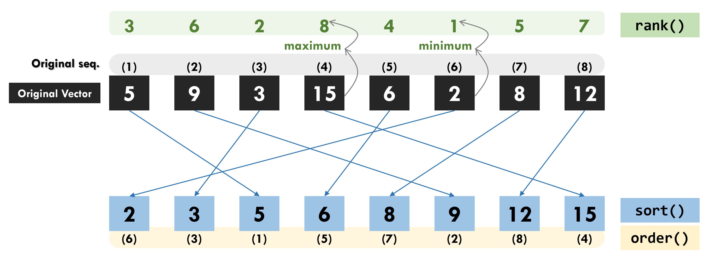
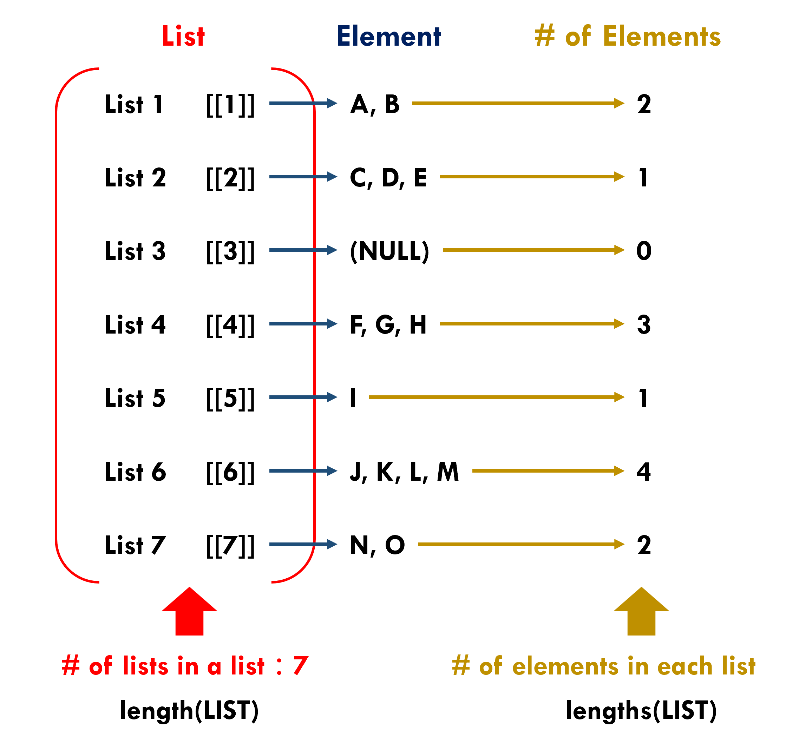
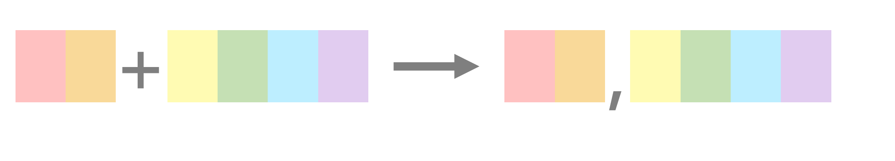
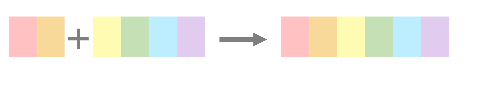
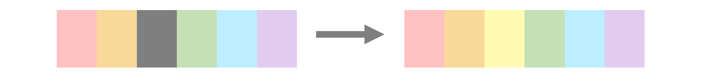
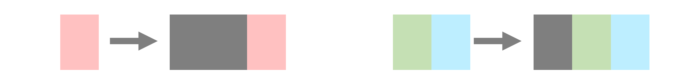
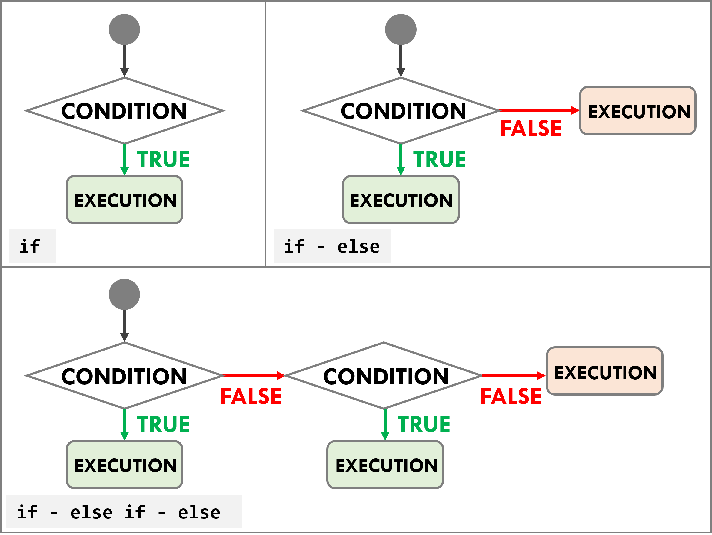
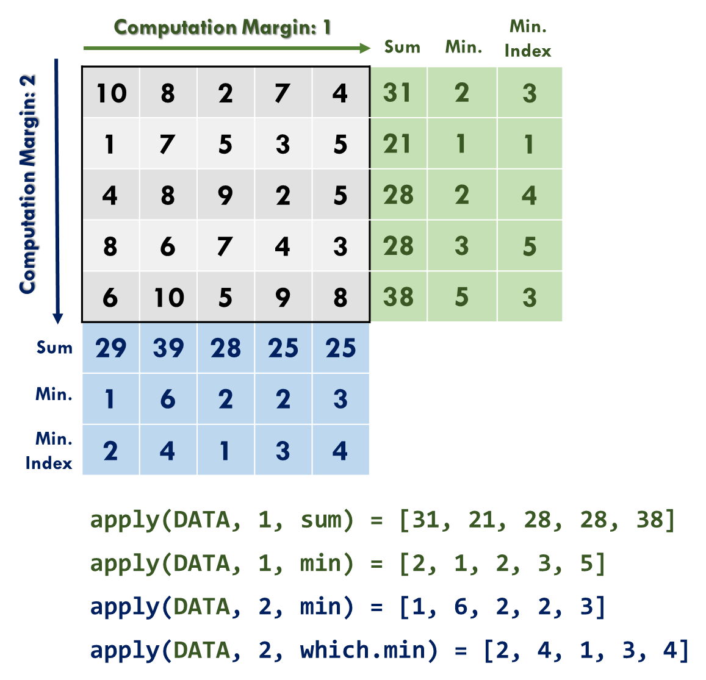

Chapter 1 Basic Syntax in R
This chapter provides a systematic introduction to the foundational syntax of R, covering data structures (objects), string manipulation, control flow, and data import/export. Mastering the functions associated with these objects is a critical step toward developing code in subsequent chapters.
1.1 Object
Objects are the fundamental elements used to store data in R. The most common types include the following:
Objects can be illustrated as shown in 1.1。

Figure 1.1: Objects in R
The following sections provide a detailed explanation of the construction and operations of each object.
1.1.1 Vector
⌾ Characteristics
- a collection of values
- one-dimensional structure
- values can be numeric, character (string), and logical
⌾ Construction
A vector can be created using the c() function.
Numeric vector
## [1] 1 2 3 4 5Character vector
## [1] "A" "B" "C" "D" "E"Logical vector
# Use abbreviation (T,F) of the logical values
vec3=c(T,F,T,F,T)
# Or specify the logical values using their complete names
vec3=c(TRUE,FALSE,TRUE,FALSE,TRUE)## [1] TRUE FALSE TRUE FALSE TRUE⌾ Extract the elements in the vector
Extract a single element
## [1] "C"Extract multiple and continuous elements
## [1] "B" "C" "D"Extract multiple and noncontinuous elements
## [1] "A" "C" "E"Extract elements by logical vector
Note that the length of the logical vector must be the same as that of the original vector.
## [1] "A" "B" "E"⌾ Sequence vector
A sequence vector can be generated using the seq() function, as shown in the following code. The argument from= specifies the starting point of the vector, while to= is the ending point. The argument by= determines the step size (i.e., the rate of increase or decrease) of the sequence.
## [1] 2 4 6 8 10 12 14 16 18 20⌾ Vector computations
Basic statistics
The following example creates a vector vec4. The corresponding code and results of the operations are shown in Table 1.1.
| Computation | Code | Result |
|---|---|---|
| Maximum |
max(vec4)
|
15
|
| Minimum |
min(vec4)
|
2
|
| Index of the maximum value |
which.max(vec4)
|
4
|
| Index of the minimum value |
which.min(vec4)
|
6
|
| Range |
range(vec4)
|
2 15
|
| Sum |
sum(vec4)
|
60
|
| Average |
mean(vec4)
|
7.5
|
| Median |
median(vec4)
|
7
|
| Product |
prod(vec4)
|
2332800
|
| Variance |
var(vec4)
|
19.714
|
| Standard Deviation |
sd(vec4)
|
4.44
|
Most of the functions mentioned above enable the argument na.rm= to be specified, which determines whether NA values should be ignored. If NA values are present in the data and this argument is not specified, the result will also be NA. An example is shown below:
## [1] NA## [1] 10Numeric computation
The following example uses vec4 and a newly created vector vec5. The corresponding code and results of all operations are presented in Table 1.2.
| Computation | Code | Result |
|---|---|---|
| Absolute value |
abs(vec5)
|
0.57 4.28 1.23 6.58 4.67 2.09
|
| Square root |
sqrt(vec4)
|
2.236 3 1.732 3.873 2.449 1.414 2.828 3.464
|
| Round |
round(vec5, digits=1)
|
0.6 4.3 -1.2 6.6 -4.7 2.1
|
| Truncate |
ceiling(vec5)
|
1 5 -1 7 -4 3
|
| Floor |
floor(vec5)
|
0 4 -2 6 -5 2
|
| Logarithm |
log(vec4)
|
1.609 2.197 1.099 2.708 1.792 0.693 2.079 2.485
|
| Exponential |
exp(vec4)
|
148.4 8103.1 20.1 3269017.4 403.4 7.4 2981 162754.8
|
| Standardisation |
scale(vec4)
|
-0.563 0.338 -1.013 1.689 -0.338 -1.239 0.113 1.013
|
| Cumulative sum |
cumsum(vec4)
|
5 14 17 32 38 40 48 60
|
⌾ Length of vector
Calculate the number of elements in a vector.
## [1] 8⌾ Frequency count of elements in a vector
Calculate the frequency of each element in a vector.
## vec_tab
## A B C D E
## 2 3 2 1 4⌾ Sequence of a vector
- The
sort()function sorts a vector in ascending order.
- The
order()function returns the indices of the original vector that correspond to the ascending order.
- The
rank()function returns the rank of each element in the vector from smallest to largest.
The code is written as follows; see the illustration in Figure 1.2.

Figure 1.2: Illustration of sort, orderm and rank
## [1] 2 3 5 6 8 9 12 15## [1] 6 3 1 5 7 2 8 4## [1] 3 6 2 8 4 1 5 7From the result of sort(), we can see that the vector vec4 is sorted in ascending order. The order() function returns the indices of the original vector corresponding to this sorted order. For example, the last value in the returned result is 4, indicating that the largest value in the vector is located at the 4th position of the original vector. Based on this result, we can also obtain the same output as sort() using the following code.
## [1] 2 3 5 6 8 9 12 15Lastly, rank() returns the rank of each element in the vector. For example, the first element 5 in vec4 has a rank of 3, meaning that it is the third smallest value in the vector.
⌾ Unique values in a vector
The unique() function can remove the duplicated values.
## [1] 1 9 5 2 6 8
⌾ Check whether NA values are present
The is.na() function checks whether an element is NA and returns a logical value.
## [1] FALSE FALSE FALSE TRUE FALSE TRUE⌾ Arithmetic operations on vectors
The following example demonstrates vector arithmetic using vec4 and a newly created vector vec6.
Operations on two vectors
When performing operations on two vectors, the lengths (length()) of both vectors must be the same.
The results of all operations are shown in Table 1.3.
| Computation | Code | Result |
|---|---|---|
vec4=c(5,9,3,15,6,2,8,12)vec6=c(2,5,8,11,7,4,10,3)
|
||
| Addition |
vec4+vec6
|
7 14 11 26 13 6 18 15
|
| Subtraction |
vec4-vec6
|
3 4 -5 4 -1 -2 -2 9
|
| Multiplication |
vec4*vec6
|
10 45 24 165 42 8 80 36
|
| Division |
vec4/vec6
|
2.5 1.8 0.375 1.364 0.857 0.5 0.8 4
|
| Remainder |
vec4 %% vec6
|
1 4 3 4 6 2 8 0
|
| Quotient |
vec4 %/% vec6
|
2 1 0 1 0 0 0 4
|
| Inner product |
vec4 %*% vec6
|
410
|
Vector–scalar operations
Operations between a vector and a scalar apply the operation to each element of the vector with that scalar.
## [1] 7 10 13 16 12 9 15 8## [1] 10 25 40 55 35 20 50 15⌾ Check whether each element in a vector is contained in another vector
Check whether each element in the vector vec6 is contained in the vector c(1, 2, 3).
## [1] TRUE FALSE FALSE FALSE FALSE FALSE FALSE TRUE⌾ Data type conversion
Convert character to numeric
Create a character vector vec_cha.
First, use the class() function to check the data type of vec_cha.
## [1] "character"Use the as.numeric() function to convert the data to numeric values.
## [1] 1 2 3 4 5Convert numeric to character
Alternatively, the as.character() function can be used to convert the data to character values.
## [1] "1" "2" "3" "4" "5"⌾ Create repeated data
Repeated values can be generated using the rep() function. This function mainly includes two arguments:
each=specifies the number of times each element is repeated
times=specifies the number of times the entire vector is repeated
An example is provided below, and the corresponding code is written as follows:
vec6=c(2,5,8,11,7,4,10,3)
# specify the number of times each element in vec6 is repeated
rep(vec6, each=2)## [1] 2 2 5 5 8 8 11 11 7 7 4 4 10 10 3 3## [1] 2 5 8 11 7 4 10 3 2 5 8 11 7 4 10 3⌾ Return the indices of TRUE values in a vector
Indices of TRUE
The which() function returns the indices of TRUE values in a vector.
## [1] 1 3 5From the example above, the TRUE values are located at the 1st, 3rd, and 5th elements of the vector vec3.
Return the indices that satisfy a condition
In addition to the basic examples above, operators (e.g., ==, >, <, …) can be used to identify elements that satisfy specific conditions. The which() function can then be used to return the indices of elements for which the result is TRUE. An example is shown below.
## [1] FALSE FALSE TRUE TRUE TRUE FALSE TRUE FALSE## [1] 3 4 5 71.1.2 Factor
⌾ Characteristics
- created from a character vector
- requires specifying factor levels
- extended applications of factors:
- adjusting legend order in the plot using
ggplot2package
- creating dummy variables in econometric models
- adjusting legend order in the plot using
⌾ Construction
Factors can be created using the factor() function, where the levels must be specified using the levels= argument. The code is constructed as follows:
An example is provided below by creating a character vector age.
To convert age into a factor with ordered levels and arrange it according to the age hierarchy, the code is written as follows:
## [1] Teen Senior Childhood Toddler Adulthood
## Levels: Toddler Childhood Teen Adulthood SeniorFrom the above example, we can observe that, unlike a character vector, a factor displays an additional message “Levels”, indicating that the values have categorical levels.
Finally, the is.factor() function can be used to determine whether a variable is a factor, or the class() function can be used to directly check the data type of the variable.
## [1] TRUE## [1] "factor"Since factors have ordered levels, they can be sorted. The sort() function can be used to perform the sorting, as shown in the following code:
## [1] Toddler Childhood Teen Adulthood Senior
## Levels: Toddler Childhood Teen Adulthood Senior⌾ Ordered factor
The factor created above has ordered levels and therefore can be sorted. However, the elements themselves do not carry numerical magnitude and cannot be directly compared in terms of size. For example, in age_fc, the level “Senior” is defined as higher than “Teen”. This ordering only indicates the hierarchy of categories and does not imply that Senior > Teen. Therefore, if two elements are compared directly using comparison operators, R will generate a warning (indicating that ordering comparisons are not meaningful for factors) and return NA. A demonstration is shown below.
## Warning in Ops.factor(age_fc[1], age_fc[2]): '>' not meaningful for factors## [1] NATo create a factor with an inherent ordering, the argument ordered=TRUE must be specified in the factor() function to indicate that the levels have an ordinal relationship.
age_order=factor(age, levels=c("Toddler","Childhood","Teen","Adulthood","Senior"), order=T)
age_order## [1] Teen Senior Childhood Toddler Adulthood
## Levels: Toddler < Childhood < Teen < Adulthood < SeniorFrom the output, we can observe that the symbol “<” appears between the levels, indicating an ordered relationship among them. The numeric operation can also be applied once the order is created.
## [1] FALSE⌾ Convert data format of a factor
A factor can be converted to a character vector using as.character(). It can also be converted to numeric values using as.numeric(), where the numeric values correspond to the order of the levels; the higher the level, the larger the assigned value. The following example illustrates this using age_fc.
## [1] "Teen" "Senior" "Childhood" "Toddler" "Adulthood"## [1] 3 5 2 1 41.1.3 Matrix
⌾ Characteristics
- two-dimensional
- consists of multiple rows and columns
- combines vectors of the same data type (character, numeric, or logical vectors)
⌾ Construction
A matrix can be created using the matrix() function, where two arguments must be specified:
nrow=specifies the number of rows in the matrix
ncol=specifies the number of columns in the matrix
Using a numeric vector 1 to 15 for example to create a matrci as follows.
## [,1] [,2] [,3] [,4] [,5]
## [1,] 1 4 7 10 13
## [2,] 2 5 8 11 14
## [3,] 3 6 9 12 15From the returned result, we can observe that the matrix is filled column-wise, that is, from top to bottom and then from left to right. If the matrix should instead be filled row-wise (from left to right and then from top to bottom), the argument byrow=TRUE must be specified. The code is written as follows.
## [,1] [,2] [,3] [,4] [,5]
## [1,] 1 2 3 4 5
## [2,] 6 7 8 9 10
## [3,] 11 12 13 14 15⌾ Matrix dimensions
A matrix is a two-dimensional data structure. To examine the number of rows and columns in the matrix, the functions nrow() and ncol() can be used, respectively, or the dim() function can be used to view both dimensions directly.
## [1] 3## [1] 5## [1] 3 5⌾ Extract a specific element in a matrix
Square brackets [ , ] can be used to return the value of a specific element. The index before the comma indicates the row, while the index after the comma indicates the column. For example, to access the element in the 2nd row and 4th column, the code is written as follows.
## [1] 9⌾ Transpose the matrix
Use the t() function to transpose a matrix.
## [,1] [,2] [,3]
## [1,] 1 6 11
## [2,] 2 7 12
## [3,] 3 8 13
## [4,] 4 9 14
## [5,] 5 10 15⌾ Matrix computation
R provides a powerful and efficient framework for matrix operations, which are essential for many statistical models. This section introduces the key functions used to perform these computations.
Row and column computations
The calculations of row and column sums and means are summarised in Table 1.4.
| Sum | Average | |
|---|---|---|
| Row |
rowSums(mat2)
|
rowMeans(mat2)
|
15 40 65
|
3 8 13
|
|
| Column |
colSums(mat2)
|
colMeans(mat2)
|
18 21 24 27 30
|
6 7 8 9 10
|
Matrix arithmetic
The basic arithmetic operations for matrices are similar to those for vectors. However, it is important to note that, for most arithmetic operations, the two matrices must have the same dimensions (dim()). Taking matrix addition as an example, the code is as follows.
## [,1] [,2] [,3] [,4] [,5]
## [1,] 2 6 10 14 18
## [2,] 8 12 16 20 24
## [3,] 14 18 22 26 30The inner product is a common operation in matrix computations and is widely used in the estimation of coefficients in many models. In R, it can be performed using %*%. When computing the inner product, the number of columns (ncol) of the first matrix must be equal to the number of rows (nrow) of the second matrix. Taking mat1 and mat2_trans (the transpose of mat2) as an example, the code is shown below.
# transpose mat2
mat2_trans=t(mat2)
# check whether the number of columns for mat1 is exactly the same as the number of rows in mat2_trans
ncol(mat1)==nrow(mat2_trans)## [1] TRUE## [,1] [,2] [,3]
## [1,] 135 310 485
## [2,] 150 350 550
## [3,] 165 390 615Please note that mat1 has dimensions of 3 rows and 5 columns, while mat2_trans has dimensions of 5 rows and 3 columns. For matrix inner product, the number of columns in the first matrix must be equal to the number of rows in the second matrix. In the example above, the resulting matrix from the inner product has dimensions of 3 × 3.
1.1.4 Data Frame
⌾ Characteristics
- Similar to a matrix, but can store different data types in columns
- Works like an Excel worksheet
- One of the most common data structures in data analysis
- Can be manipulated using the
dplyrpackage (see Data Tidy and Processing)
⌾ Construction
The data frame can be created using the data.frame() function.
VAR1, VAR2, and VAR3 in the above code represent the variable names in the data frame, that is, the column headers of the table.
The following simple example illustrates how to construct a data frame.
StuScore=data.frame(StudentID=c("ID1","ID2","ID3","ID4","ID5"),
Name=c("Bob","Mary","Robert","Jason","Jane"),
Score=c(60,80,40,50,100))
StuScore## StudentID Name Score
## 1 ID1 Bob 60
## 2 ID2 Mary 80
## 3 ID3 Robert 40
## 4 ID4 Jason 50
## 5 ID5 Jane 100⌾ Retrieve the column name
## [1] "StudentID" "Name" "Score"⌾ Set the column header names
Column names can also be set using colnames(). The corresponding code is shown below.
⌾ Retrieve specific rows/columns
Retrieve specific rows
Place the row index or logical vector before the comma inside the brackets. When using a logical vector, its length must be the same as the number of rows in the data. The code is written as follows.
## StudentID Name Score
## 1 ID1 Bob 60
## 3 ID3 Robert 40
## 5 ID5 Jane 100Retrieve specific columns
There are three ways to return specified (multiple) columns, including:
- Column index vector
- Logical vector
- Column name vector
When using a logical vector, its length must be the same as the number of columns in the data. The code is written as follows.
# use the index
StuScore[, c(1,2)]
# use the logical vector
StuScore[, c(T,F,T,F,T)]
# use the column name
StuScore[, c("StudentID","Name")]## StudentID Name
## 1 ID1 Bob
## 2 ID2 Mary
## 3 ID3 Robert
## 4 ID4 Jason
## 5 ID5 JaneIn addition, a data frame can return a specific single column using $ or [[""]]. Note that [[""]] uses double brackets, which differs from the previous methods. The code is written as follows.
## [1] "Bob" "Mary" "Robert" "Jason" "Jane"## [1] 60 80 40 50 100⌾ Retrieve and edit a specific element
Specify by index
## [1] "Mary"Edit a specific element
## StudentID Name Score
## 1 ID1 Bob 60
## 2 ID2 Jessica 80
## 3 ID3 Robert 40
## 4 ID4 Jason 50
## 5 ID5 Jane 100⌾ Look up the first/last six rows
Here we use the built-in iris dataset in R for illustration. The iris dataset contains 150 samples and includes three species of iris flowers (setosa, virginica, and versicolor). The data record the length and width of the petals and sepals.
Retrieve the first six rows
## Sepal.Length Sepal.Width Petal.Length Petal.Width Species
## 1 5.1 3.5 1.4 0.2 setosa
## 2 4.9 3.0 1.4 0.2 setosa
## 3 4.7 3.2 1.3 0.2 setosa
## 4 4.6 3.1 1.5 0.2 setosa
## 5 5.0 3.6 1.4 0.2 setosa
## 6 5.4 3.9 1.7 0.4 setosaRetrieve the last six rows
## Sepal.Length Sepal.Width Petal.Length Petal.Width Species
## 145 6.7 3.3 5.7 2.5 virginica
## 146 6.7 3.0 5.2 2.3 virginica
## 147 6.3 2.5 5.0 1.9 virginica
## 148 6.5 3.0 5.2 2.0 virginica
## 149 6.2 3.4 5.4 2.3 virginica
## 150 5.9 3.0 5.1 1.8 virginicaIf retrieve more or less rows, we can specify the argument after the data. For example, the code of retrieving only first 3 rows in the data iris is shown below:
## Sepal.Length Sepal.Width Petal.Length Petal.Width Species
## 1 5.1 3.5 1.4 0.2 setosa
## 2 4.9 3.0 1.4 0.2 setosa
## 3 4.7 3.2 1.3 0.2 setosa⌾ Augment the data frame
Append a new row (new record)
To add new data, the rbind() function can be used to append rows. The code is shown below.
# create a new record
new_student=data.frame(StudentID="ID6", Name="Roy", Score=90)
# append the new data by rbind() function
StuScore=rbind(StuScore, new_student)
StuScore## StudentID Name Score
## 1 ID1 Bob 60
## 2 ID2 Jessica 80
## 3 ID3 Robert 40
## 4 ID4 Jason 50
## 5 ID5 Jane 100
## 6 ID6 Roy 90Add a new column (new field)
To add a new field (column) to the entire data (e.g., adding a gender column to StuScore), the cbind() function can be used to combine columns. The code is shown below.
# create a new field
Gender=c("M","F","M","M","F","M")
# add the new field by cbind() function
StuScore=cbind(StuScore, Gender)
StuScore## StudentID Name Score Gender
## 1 ID1 Bob 60 M
## 2 ID2 Jessica 80 F
## 3 ID3 Robert 40 M
## 4 ID4 Jason 50 M
## 5 ID5 Jane 100 F
## 6 ID6 Roy 90 MAlternatively, a new column can be added directly using $ or [[""]]. The code is shown below:
## StudentID Name Score Gender Height Weight
## 1 ID1 Bob 60 M 180 60
## 2 ID2 Jessica 80 F 165 70
## 3 ID3 Robert 40 M 170 90
## 4 ID4 Jason 50 M 160 55
## 5 ID5 Jane 100 F 175 80
## 6 ID6 Roy 90 M 180 75⌾ Check duplicated rows
For illustration, we first create a data frame that contains duplicate records.
StuScore_dup=data.frame(StudentID=c("ID1","ID2","ID4","ID3","ID4","ID5","ID2"),
Name=c("Bob","Mary","Jason","Robert","Jason","Jane","Mary"),
Score=c(60,80,40,100,40,100,80))
StuScore_dup## StudentID Name Score
## 1 ID1 Bob 60
## 2 ID2 Mary 80
## 3 ID4 Jason 40
## 4 ID3 Robert 100
## 5 ID4 Jason 40
## 6 ID5 Jane 100
## 7 ID2 Mary 80The data StuScore_dup contains duplicated rows (ID2 & ID4). We can further check this using the duplicated() function.
## [1] FALSE FALSE FALSE FALSE TRUE FALSE TRUE## [1] 5 7As shown in the result, the 5th and 7th records are identified as duplicates. Note that the first occurrence of a row in a data frame is not considered a duplicate.
1.1.5 List
⌾ Characteristics
- A collection of objects (can include vectors, matrices, data frames, list, etc.)
- The most complex object type, but highly flexible to use
⌾ Construction
Use list() function to create a list.
StuScore_list=list(StudentID=c("ID1","ID2","ID3","ID4","ID5"),
Name=c("Bob","Mary","Robert","Jason","Jane"),
Score=c(60,80,40,50,100),
Class="A")## $StudentID
## [1] "ID1" "ID2" "ID3" "ID4" "ID5"
##
## $Name
## [1] "Bob" "Mary" "Robert" "Jason" "Jane"
##
## $Score
## [1] 60 80 40 50 100
##
## $Class
## [1] "A"⌾ Retrieve the attributes in a list
Retrieve by $ or [[""]]
The attribute of a list can be retrieve by LIST$ATTRIBUTE or LIST[["ATTRIBUTE"]].
## [1] 60 80 40 50 100## [1] "Bob" "Mary" "Robert" "Jason" "Jane"Retrive by index
## [1] "Bob" "Mary" "Robert" "Jason" "Jane"⌾ Length of a list
The length of a vector can be calculated using the length() function, and the same applies to list. The code is written as follows.
## [[1]]
## [1] 1 2 3 4 5
##
## [[2]]
## [1] "A" "B" "C" "D"
##
## [[3]]
## [1] TRUE FALSE TRUE## [1] 3From this, we can see that the length of num_list is 3. Moreover, if we want to know the length of each element in the list, we can use the lengths() function. The code is written as follows, and the concept of length() and lengths() are illustrated in Figure 1.3.
## [1] 5 4 3From this, we can see that the first array in num_list has a length of 5, the second has a length of 4, and the last has a length of 3.

Figure 1.3: Illustration of the length of list
⌾ Remove the list structure
To remove the list structure and return all elements contained in the list, the unlist() function can be used.
## [1] "1" "2" "3" "4" "5" "A" "B" "C" "D"
## [10] "TRUE" "FALSE" "TRUE"1.1.6 Date and Time
In data processing, setting proper date and time formats helps with tasks such as calculating time differences and plotting time series data. In R, time data can be handled using the base and lubridate packages. Note that some functions in these packages share the same names, so it is recommended to specify the package when using them, i.e., lubridate::XXXX().
⌾ Basic settings
Time formats depend on the local computer settings; therefore, they should be specified explicitly.
# locale settings (English)
Sys.setlocale(category="LC_ALL", locale="en")
# locale settings (Traditional Chinese, Taiwan)
Sys.setlocale(category="LC_ALL", locale="zh_TW.UTF-8")In addition, time zones are important component and can be specified in date-time functions. Several time zone settings are shown in Table 1.5.
| Time Zone | TZ Identifier | TZ Abbreviations |
|---|---|---|
| Standard Time | UTC | UTC |
| Sydney Time | Australia/Sydney | AEDT/AEST |
| U.S. Eastern Standard Time | US/Eastern | EDT |
| Taipei Time | Asia/Taipei | CST |
| Tokyo Time | Asia/Tokyo | JST |
Detailed time zone format can be found here.
Date and time values also follow standardised formatting conventions. Commonly used formats are summarised in Table 1.6.
| Code | Meaning | Code | Meaning |
|---|---|---|---|
| %Y | Year (four digits) | %H | Hour (24-hour format) |
| %y | Year (two digits) | %h | Hour (12-hour format) |
| %B | Month (full name) | %M | Minute |
| %b | Month (abbreviation) | %S | Second |
| %m | Month (numeric) | %p | AM/PM |
| %d | Day | %Z | Time zone |
For example, the datetime “2024-02-14 13:14:52” follows the format “%Y-%m-%d %H:%M:%S”.
⌾ Create time and date
Dates can be created using the as.Date() function. Simply provide the date value, and optionally specify the format= argument to ensure the correct format. The code is written as follows.
# create date in character vector
date_str=c("2024-02-14","2023-11-07","2022-07-28")
# covert character to date format
date_str=as.Date(date_str)
# check the format
class(date_str)## [1] "Date"Datetime values can be created using the as.POSIXct() function by providing the full date and time. If the date is omitted, the system will automatically use the current computer date. The format= and tz= arguments can also be specified to ensure the correct time format and time zone. The code is written as follows.
# create datetime in character vector
time_str1=c("2024-02-14 13:14:52","2023-11-07 07:18:22","2022-07-28 20:10:31")
# covert character to datetime format
time_str1=as.POSIXct(time_str1, tz="Australia/Sydney")
# check the format
class(time_str1)## [1] "POSIXct" "POSIXt"## [1] "2024-02-14 13:14:52 AEDT" "2023-11-07 07:18:22 AEDT"
## [3] "2022-07-28 20:10:31 AEST"If the time format does not follow the typical format above, the format= argument must be specified manually, with the appropriate format based on Table 1.6. An example is shown in the code below.
# create a datetime string
time_str2=c("14/Feb/2024 011452 PM","07/Nov/2023 071822 AM","28/July/2022 081031 PM")
# ensure that the locale is set at proper region
Sys.setlocale(category="LC_ALL", locale="en")## [1] "LC_COLLATE=en;LC_CTYPE=en;LC_MONETARY=en;LC_NUMERIC=C;LC_TIME=en"# covert character to datetime
as.POSIXct(time_str2, format="%d/%B/%Y %I%M%S %p", tz="Australia/Sydney")## [1] "2024-02-14 13:14:52 AEDT" "2023-11-07 07:18:22 AEDT"
## [3] "2022-07-28 20:10:31 AEST"Note that if the text contains non-English characters, the locale should be set to the appropriate region; otherwise, errors may occur. An example in which the datetime string contains Japanese characters is shown below.
# create a datetime string (contain non-English character)
time_str3=c("2024/03/15 午前04:14:52","2023/11/07 午前07:18:22","2022/07/28 午後08:10:31")
# ensure that the locale is set at proper region
Sys.setlocale("LC_ALL", "ja_JP.UTF-8")
# covert character to datetime
as.POSIXct(time_str3, format="%Y/%m/%d %p%I:%M:%S", tz="Asia/Tokyo")
# it is highly recommended to set the locale to your origin one
Sys.setlocale(category="LC_ALL", locale="en")## [1] "2024-03-15 04:14:52 JST" "2023-11-07 07:18:22 JST"
## [3] "2022-07-28 20:10:31 JST"⌾ Retrieve datetime information
Functions for retrieving date and time information are summarised in Table 1.7, using the previously defined time_str1 data as an example.
| Function | Meaning |
Example (time_str1)
|
|---|---|---|
|
2024-02-14 13:14:52 2023-11-07 07:18:22 2022-07-28 20:10:31 |
||
year()
|
Year | 2024, 2023, 2022 |
month()
|
Month | 2, 11, 7 |
day()
|
Day | 14, 7, 28 |
week()
|
Week | 7, 45, 30 |
wday()
|
Weekday | 4, 3, 5 |
hour()
|
Hour | 13, 7, 20 |
minute()
|
Minute | 14, 18, 10 |
second()
|
Second | 52, 22, 31 |
The result returned by the wday() function does not directly correspond to the actual weekday because the function assumes Sunday as the first day of the week by default. To address this, both month() and wday() allow users to provide detailed settings, such as full names and abbreviations. The complete parameter settings are listed in Table 1.7. The label= argument determines whether the result is returned as text (otherwise the default is numeric); the abbr= argument specifies whether abbreviations are returned and is only effective when label=TRUE; and the locale= argument sets the language, for example en for English and zh_TW.UTF-8 for Traditional Chinese (Taiwan).
| Function & Argument | Result |
|---|---|
month()
|
|
month(DATE)
|
1 2 3 4 5 6 7 8 9 10 11 12 |
month(DATE, label=T, locale="en")
|
Jan Feb Mar Apr May Jun Jul Aug Sep Oct Nov Dec |
month(DATE, label=T, abbr=F, locale="en")
|
January February March April May June July August September October November December |
month(DATE, label=T, locale="zh_TW.UTF-8")
|
一月 二月 三月 四月 五月 六月 七月 八月 九月 十月 十一月 十二月 |
wday()
|
|
wday(DATE)
|
2 3 4 5 6 7 1 |
wday(DATE, week_start=1)
|
1 2 3 4 5 6 7 |
wday(DATE, label=T, locale="en")
|
Mon Tue Wed Thu Fri Sat Sun |
wday(DATE, label=T, abbr=F, locale="en")
|
Monday Tuesday Wednesday Thursday Friday Saturday Sunday |
wday(DATE, label=T, locale="zh_TW.UTF-8")
|
週一 週二 週三 週四 週五 週六 週日 |
wday(DATE, label=T, abbr=F, locale="zh_TW.UTF-8")
|
星期一 星期二 星期三 星期四 星期五 星期六 星期日 |
1.2 Text Processing
In data analysis, text processing is an important step that allows us to extract specific words or patterns, such as counting word frequencies, replacing particular terms, or identifying the positions where text appears. Through these operations, we can further explore textual information within the data. Text processing in R can be performed using the built-in base package or the stringr package. This section introduces text processing methods using these two packages.
All functions introduced in this section are summarised in 1.9。
| Package | Function | Usage | Illustration |
|---|---|---|---|
base
|
paste()
|
Concatenate strings |
 |
paste0()
|
Concatenate strings (no separator) |
 |
|
toupper()
|
Convert to uppercase | ||
tolower()
|
Convert to lowercase | ||
substr()
|
Extract characters | ||
strsplit()
|
Split string | ||
gsub()
|
Replace characters |
 |
|
nchar()
|
String length (number of characters) | ||
grep()
|
Return indices matching pattern | ||
grepl()
|
Check if string contains specific pattern | ||
regexpr()
|
Return index of first occurrence of pattern | ||
stringr
|
str_to_upper()
|
Convert to uppercase | |
str_to_lower()
|
Convert to lowercase | ||
str_to_title()
|
Capitalise first letter | ||
str_which()
|
Return indices matching pattern | ||
str_detect()
|
Check if string contains specific pattern | ||
str_starts()
|
Check if string starts with specific pattern | ||
str_locate()
|
Return index of first occurrence of pattern | ||
str_locate_all()
|
Return indices of all occurrences of pattern | ||
str_count()
|
Count occurrences of pattern | ||
str_sub()
|
Extract characters (can also replace) | ||
str_replace_all()
|
Replace characters | ||
str_length()
|
String length (number of characters) | ||
str_pad()
|
Standardise string width |
 |
|
str_split()
|
Split string | ||
str_flatten()
|
Concatenate strings | ||
str_glue()
|
Concatenate strings (with variables) | ||
str_order()
|
Return sorting indices of strings | ||
str_sort()
|
Return sorted strings |
1.2.1 Concatenate Strings
⌾ paste(): Concatenate with a specific separator
The collapse= argument specifies the character used to separate the concatenated strings.
⌾ paste0():Concatenate with no separator
paste0() directly concatenates elements within a vector, which is equivalent to paste(text_vector, collapse="").
⌾ str_flatten(): Concatenate with a specific separator
str_flatten() function is equivalent to paste().
The collapse= argument specifies the separator used to concatenate the strings.
⌾ str_glue(): Concatenate strings and variables
The following example demonstrates the application of string concatenation functions.
# create character vector
transport=c("Bus", "MRT", "Car", "Motorcycle", "Bike", "Taxi")
all_name="Mode"
# use paste() function to concatenate all elements with separator "|"
paste(transport, collapse="|")## [1] "Bus|MRT|Car|Motorcycle|Bike|Taxi"## [1] "Mode : Bus" "Mode : MRT" "Mode : Car"
## [4] "Mode : Motorcycle" "Mode : Bike" "Mode : Taxi"# use paste0() function to concatenate a character with each element (with no space)
paste0(all_name, ": ", transport)## [1] "Mode: Bus" "Mode: MRT" "Mode: Car" "Mode: Motorcycle"
## [5] "Mode: Bike" "Mode: Taxi"# use str_flatten() function to concatenate all elements with separator "|"
str_flatten(transport, collapse="|")## [1] "Bus|MRT|Car|Motorcycle|Bike|Taxi"## Mode: Bus
## Mode: MRT
## Mode: Car
## Mode: Motorcycle
## Mode: Bike
## Mode: Taxi1.2.2 Convert Case
⌾ toupper(): Convert to upper case
⌾ tolower(): Convert to lower case
⌾ str_to_upper(): Convert to upper case*
⌾ str_to_lower(): Convert to lower case*
⌾ str_to_title(): Capitalise the first letter
The following example demonstrates the application of converting character case.。
# create character vector
transport=c("Bus", "MRT", "Car", "Motorcycle", "Bike", "Taxi")
all_name="Mode"
# use toupper() function to covert to upper case
toupper(transport)## [1] "BUS" "MRT" "CAR" "MOTORCYCLE" "BIKE"
## [6] "TAXI"## [1] "bus" "mrt" "car" "motorcycle" "bike"
## [6] "taxi"## [1] "BUS" "MRT" "CAR" "MOTORCYCLE" "BIKE"
## [6] "TAXI"## [1] "bus" "mrt" "car" "motorcycle" "bike"
## [6] "taxi"## [1] "New South Wales"# use tools::toTitleCase() function to capitalise the first letter in proper English title case
tools::toTitleCase("university of sydney")## [1] "University of Sydney"1.2.3 Extract and Replace Characters
⌾ substr(): Extract characters
⌾ gsub(): Replace characters
⌾ str_sub(): Extract and replace characters
# extract character based on the index
str_sub(CHARACTER_VECTOR, START_INDEX, END_INDEX)
# replace character based on the index
str_sub(CHARACTER_VECTOR, START_INDEX, END_INDEX)="NEW_CHARACTER"
⌾ str_replace_all()：Replace all matched characters
str_replace_all() replaces all occurrences of a pattern (same as gsub() function), while str_replace() only replaces the first occurrence, making it less flexible in practice.
The pattern= argument (string or regular expression) that specifies the characters or string to be replaced, while the replacement= argument specifies the new character string that will replace all matches of the pattern.
The following example demonstrates the application of extracting and replacing characters.
# create character vector
transport=c("Bus", "MRT", "Car", "Motorcycle", "Bike", "Taxi")
all_name="Mode"
# use substr() function to extract character
substr(transport, 1, 3)## [1] "Bus" "MRT" "Car" "Mot" "Bik" "Tax"## [1] "Bus" "MRT" "C?r" "Motorcycle" "Bike"
## [6] "T?xi"## [1] "Bu" "MR" "Ca" "Mo" "Bi" "Ta"# use str_sub() to replace character by setting the position
transport_new=transport
str_sub(transport_new, 2, 3)="??"
transport_new## [1] "B??" "M??" "C??" "M??orcycle" "B??e"
## [6] "T??i"## [1] "B?s" "MRT" "C?r" "M?t?rcycl?" "B?k?"
## [6] "T?x?"In the example above, [aeiou] in the str_replace() function indicates that any character inside the brackets can be replaced. For more details on such expressions, please refer to the Regular Expressions section.
1.2.4 Split Strings
⌾ strsplit(): Split string
The SEPARATION in the code refers to the character used to split a string.
⌾ str_split(): Split string
The str_split() function is provided by the stringr package and is equivalent to the strsplit() function in the base package.
The following example demonstrates how to split strings.
# create character vector
transport_comb=c("Bus & MRT & Bike", "Motorcycle & Car", "Taxi")
# use strsplit() to split the string
strsplit(transport_comb, " & ")## [[1]]
## [1] "Bus" "MRT" "Bike"
##
## [[2]]
## [1] "Motorcycle" "Car"
##
## [[3]]
## [1] "Taxi"## [[1]]
## [1] "Bus" "MRT" "Bike"
##
## [[2]]
## [1] "Motorcycle" "Car"
##
## [[3]]
## [1] "Taxi"After splitting, the resulting strings are stored in a list. [[1]] represents the result of splitting the first element of the transport_comb vector, which contains three elements (Bus, MRT, Bike), and the others follow the same structure. In addition, we can use the unlist() function to extract all split results from the list and convert them into a vector. The code is written as follows.
# split string
word_split=strsplit(transport_comb, " & ")
# remove the list structure to form a vector
unlist(word_split)## [1] "Bus" "MRT" "Bike" "Motorcycle" "Car"
## [6] "Taxi"1.2.5 Count Characters
⌾ nchar(): String length
⌾ str_length(): String length
Alternatively, the same purpose can be achieved using the str_length() function from the stringr package.
# create vector
transport=c("Bus", "MRT", "Car", "Motorcycle", "Bike", "Taxi")
# use nchar() to count number of characters
nchar(transport)## [1] 3 3 3 10 4 4## [1] 3 3 3 10 4 4
⌾ str_count(): Count occurrences of pattern
## [1] 2 3 2 7 2 2In the code, [^aeiou] means characters that do not include any of aeiou. Therefore, after removing u from “Bus”, the remaining character count is 2. For more details on such expressions, please refer to the Regular Expressions section.
1.2.6 Search Characters
By searching characters, we can determine whether a specific pattern exists in a character vector, or further identify the positions where the pattern appears within each element of the vector.
⌾ grep(): Return indices matching pattern
The result is an index vector. If no elements match the condition, the function returns integer(0).
⌾ str_which(): Return indices matching pattern
The result is an index vector. If no elements match the condition, the function returns integer(0).
⌾ grepl(): Check if string contains specific pattern
The result is a logical vector whose length is the same as that of the input character vector.
⌾ str_detect(): Check if string contains specific pattern
The result is a logical vector whose length is the same as that of the input character vector.
# create character vector
transport=c("Bus", "MRT", "Car", "Motorcycle", "Bike", "Taxi")
# use grep() function to return indices matching pattern
grep("a|c", transport)## [1] 3 4 6## [1] 3 4 6## [1] FALSE FALSE TRUE TRUE FALSE TRUE## [1] FALSE FALSE TRUE TRUE FALSE TRUEIn the code, a|c means a or c, which is equivalent to [ac]. For more details on such expressions, please refer to the Regular Expressions section.
⌾ str_starts(): Check whether a string starts with a specific character
The argument PATTERN in the code checks whether each element in the character vector begins with the specified character.
Using the transport vector as an example again, the code is written as follows.
## [1] TRUE FALSE FALSE FALSE TRUE FALSEThe results indicate that the first element (Bus) and the fifth element (Bike) satisfy the specified condition, which the character starts from “B”.
The examples above check whether a specific pattern exists in a vector, returning either a logical vector or an index vector. However, in some cases we may want to know the exact position of the pattern within each element of the vector. This can be achieved using the regexpr() and str_locate() functions.
⌾ regexpr(): Return index of first occurrence of pattern
The result is an index vector whose length is the same as that of the input character vector. If an element does not contain the specified pattern, -1 is returned.
⌾ str_locate(): Return index of first occurrence of pattern
The result is a matrix. The number of rows (nrow()) equals the length of the input character vector, and the matrix contains two columns: start, indicating the starting index of the pattern, and end, indicating the ending index. If an element does not contain the specified pattern, NA is returned.
# create vector
fruit_eg=c("papaya", "grape", "lychee", "apple", "guava", "coconut")
# use grepl() function to find the first occurrence of pattern
regexpr("a", fruit_eg)## [1] 2 3 -1 1 3 -1
## attr(,"match.length")
## [1] 1 1 -1 1 1 -1
## attr(,"index.type")
## [1] "chars"
## attr(,"useBytes")
## [1] TRUEThe results show the index position where the character a first appears in each element of the fruit_eg vector. For example, in the first element “papaya”, the first occurrence of a is at the second character, so the returned value is “2”. In contrast, for the third element “lychee”, since it does not contain the character a, the returned value is “-1”.
## start end
## [1,] 2 2
## [2,] 3 3
## [3,] NA NA
## [4,] 1 1
## [5,] 3 3
## [6,] NA NAThe results obtained using the str_locate() function are more direct, as they display the start and end positions of the character. For example, the first row of the result indicates that the first occurrence of a in the first element “papaya” is at the second character. The NA in the third row indicates that the character does not appear in the third element.
⌾ str_locate_all(): Return indices of all occurrences of pattern
As shown in the examples above, both regexpr() and str_locate() only return the position of the first occurrence of a pattern. If we want to obtain all occurrences, we can use the str_locate_all() function. The argument settings are the same as those of str_locate(). The returned result contains the start and end positions of all occurrences of the specified pattern within each element and is displayed as a list, unlike str_locate(), which returns a matrix. The code is written as follows.
# use str_locate_all() function to return indices of all occurrences of pattern
str_locate_all(fruit_eg, "a")## [[1]]
## start end
## [1,] 2 2
## [2,] 4 4
## [3,] 6 6
##
## [[2]]
## start end
## [1,] 3 3
##
## [[3]]
## start end
##
## [[4]]
## start end
## [1,] 1 1
##
## [[5]]
## start end
## [1,] 3 3
## [2,] 5 5
##
## [[6]]
## start endThe result is a list containing six sublists, each representing the result for an element in the fruit_eg vector. For example, the matrix in the first sublist [[1]] has three rows (nrow(fruit_eg)=3), indicating that three matching characters were found in the element “papaya”, located at the 2nd, 4th, and 6th positions. If no matching characters are found, only the column headers (start, end) are displayed, and the number of rows is 0.
⌾ Search and extract characters
In practical data analysis, we often search for specific patterns within a character vector and extract segments based on those patterns. This typically requires combining functions for searching and extracting characters.
以鄉鎮市區的名稱擷取為例，由於全臺灣行政區的名稱長度落於 2 至 4 字之間，無法單純藉由substr()直接鎖定位置，故應先尋找出「鄉鎮市區」字元所在的位置，再進一步擷取。得知該位置後，擷取的字元必須自第一個開始，結束於上述「鄉鎮市區」的位置減 1。程式碼撰寫如下。
# 建立文字向量
cha_vec=c("竹北市","東區","那瑪夏區","羅東鎮","太麻里鄉")
# 先利用regexpr()搜尋「鄉鎮市區」的位置
district_loc=regexpr("[鄉鎮市區]", cha_vec)
# regexpr("鄉|鎮|市|區", cha_vec) # 或利用「|」
district_loc## [1] 1 1 1 1 1
## attr(,"match.length")
## [1] 1 1 1 1 1
## attr(,"index.type")
## [1] "chars"
## attr(,"useBytes")
## [1] TRUE## [1] "" "" "" "" ""1.2.7 String Padding
文字填補可使向量中所有文字皆為固定長度，使文字格式得以統一，在stringr套件中可利用str_pad()函式填補字元。
⌾ str_pad()填補字元
在上述程式碼中所需設定的引數彙整如下：
width=設定文字的寬度，如希望的統一字串格式為「5」個字元，則設定「width=5」
side=設定填補的方向，包含right與left
pad=設定欲填補的字元，如希望統一補上「A」字元，則設定「pad="A"」
實際範例如下。
# 建立向量
num_pad=seq(2, 20, 2)
# 若希望以0填補於文字最前方，並須為三個字元
str_pad(num_pad, width=3, side="left", pad="0")## [1] "002" "004" "006" "008" "010" "012" "014" "016" "018" "020"1.2.8 String Sorting
向量排序是利用sort()、order()、rank()等達成目的（參見向量排序小節），而在文字分析中可以利用str_sort()與str_order()達成之。文字的排序係以 UTF-8 編碼順序為原則。程式碼傳如下。
⌾ str_sort()排序
⌾ str_order()取得排序索引
實際範例如下。
## [1] "Bike" "Bus" "Car" "Motorcycle" "MRT"
## [6] "Taxi"## [1] 5 1 3 4 2 61.2.9 Regular Expressions
正規表示式（Regular Expression）是各程式語言中的標準格式，可藉此做進階的文字處理，擴充上述小節中文字取代、搜尋等功能的彈性，若能掌握此技巧，得以提升文字探勘的能力。常用的正規表示式彙整如表1.10。
\\
|
\\..\\\\
|
*
|
ab* ab
|
\\n
|
+
|
ab+ ab
|
|
\\t
|
tab |
?
|
ab? ab
|
\\s
|
{n}
|
n a{5} a 5
|
|
\\S
|
[]
|
[abc]abc
|
|
\\d
|
[^]
|
..[^abc]abc
|
|
\\D
|
[-]
|
[a-c] a c
|
|
\\w
|
^
|
…^abc abc
|
|
\\W
|
$
|
…abc$ abc
|
|
|
|
a|b a b
|
(?=)
|
a(?=b) a b
|
.
|
ab. ab
|
(?!)
|
a(?!b) a b
|
關於正規表示式的詳細說明請參考此。
1.3 控制流程
1.3.1 邏輯判斷
⌾ if()函式邏輯控制
在程式語言中往往需要使用邏輯判斷進一步控制是否往下執行，此時可以利用if(){}的函式判斷，程式碼撰寫如下。
若條件回傳結果為「真」（TRUE），執行下方的程式碼，否則不執行之。
此外，若條件為「偽」（FALSE）時亦有其他須執行程序，可利用else{}控制之，程式碼撰寫如下。
若有多重條件判斷，可利用else if(){}判斷多種不同的條件，程式碼撰寫如下。

Figure 1.4: 邏輯判斷示意圖
以下示範多重條件判斷的程式碼，撰寫如下。
score=65
if(score>=90){
print("A")
}else if(score>=70){
print("B")
}else if(score>=60){
print("C")
}else{
print("F")
}## [1] "C"
⌾ ifelse()函式
除了上述流程控制以外，若欲執行簡單的邏輯判斷，並將程式碼縮減至一行，可嘗試使用ifelse()函式，程式碼撰寫如下。
## [1] "Good"或撰寫複雜的巢式邏輯判斷，如下：
## [1] "C"雖然利用ifelse()函式可達到相同目的，且程式碼縮減至一行，然而此種寫法在偵錯時不容易檢查，故建議若只是執行簡單（非巢狀）的邏輯判斷時可利用ifelse()函式；若為複雜的邏輯判斷，仍須使用if(){}else if{}else{}的邏輯控制較為清楚。
⌾ switch()函式判斷
switch()的功能與if()函式邏輯控制相當，在判斷的邏輯較為單純的時候，可應用此函式較為簡潔，程式碼撰寫如下：
再次以分數與等第之間的轉換為例，若等第與分數之間屬於一對一的關係，則可單純透過switch()函式控制，程式碼撰寫如下。
## [1] 951.3.2 for()迴圈
迴圈應用於需要重複執行的程式碼，其中最常見的是for()迴圈，用以控制執行的次數，其程式撰寫如下：
程式中的物件為向量中的元素，當所有元素皆輪流執行程序，則此迴圈即停止。具體來說，以由 1 計數並列印至 5 為例，程式碼撰寫如下。
## [1] 1
## [1] 2
## [1] 3
## [1] 4
## [1] 5此範例中c(1:5)即是向量，而向量中的每一元素即作為迴圈中的物件i，並用以執行程式（列印i）。
⌾ break結束迴圈
有時我們希望在特定條件「結束」整個迴圈，可利用break終止之。如以下範例中，若遇到除以 3 的餘數（%%）為 0 時即停止。程式碼撰寫如下。
## [1] 1
## [1] 2
⌾ next跳過迴圈
有時我們希望在特定條件「跳過」迴圈，可利用next執行下一程序。如以下範例中，若遇到除以 3 的餘數（%%）為 0 時跳過該執行程序，並繼續執行下一個。程式碼撰寫如下。
## [1] 1
## [1] 2
## [1] 4
## [1] 5
## [1] 7
## [1] 8
## [1] 101.3.3 while()迴圈
for()迴圈可以控制執行的次數，所輸入向量的長度即表示程式需執行的次數，然而有時候我們不知道須執行幾次，或希望程式不斷地執行，直至「不滿足」指定的執行條件時才終止，此時可以利用while()迴圈達成此目的。程式碼撰寫如下：
以由 1 計數至 10 為例，利用while()迴圈執行之程式碼撰寫如下。
## [1] 1
## [1] 2
## [1] 3
## [1] 4
## [1] 5
## [1] 6
## [1] 7
## [1] 8
## [1] 9
## [1] 101.3.4 建立自定義函式
在程式撰寫中，通常我們會使用套件中的函式來做運算，然而有時候現成的函式無法滿足自身需求，此時就必須自行建立函式，可透過function()函式建立之。function()函式的撰寫架構如下：
其中，執行程式為利用所輸入的變數進行程式運算，而最終結果即為欲輸出的資訊，可為任何一種物件（object），並利用return()函式明確說明欲輸出的資訊。
以下以簡單的範例說明function()函式之應用，以向量的最小值與最大值之加總為例。
## [1] 6透過自定義函式，可提升程式撰寫的效率，並簡化程式碼的複雜度，對於後續偵錯與檢驗有極高助益。此外在 R 語言中自定義函式亦可打包為套件，未來執行相關程式時，僅需讀取套件後，即可應用自定義的函式，進而提升程式編撰彈性與效率。
1.3.5 錯誤處理
在迴圈控制中，有時程式會因執行錯誤而停止迴圈，造成執行的困擾。此時可以利用tryCatch()函式偵錯，以決定發現錯誤後的下一步驟，可透過「停止（stop()）」立即終止迴圈，或透過「警告（warning()）」顯示警告訊息，抑或透過「訊息（message()）」顯示提示訊息。tryCatch()函式的撰寫說明如下。
⌾ stop()終止迴圈
為說明錯誤處理的程序，在此先建立一個錯誤的程式，此程式係將陣列中的各元素乘以 2。
## [1] 2
## [1] 10## Error in i * 2: non-numeric argument to binary operator由上述執行結果可知，由於vec_try陣列中含有部分元素屬於文字，無法做四則運算，故程式執行有誤。
若希望迴圈遇到問題即自動停止，並顯示自定義的錯誤訊息，程式撰寫如下。
for(i in vec_try){
tryCatch({
print(i*2)
}, error=function(e){
stop(paste0(i, " is not numeric!\n"))
})
}## [1] 2
## [1] 10## Error in value[[3L]](cond): a is not numeric!
⌾ warning()顯示警告
若希望迴圈遇到錯誤時勿停止，而是顯示自定義的警告訊息，並繼續執行程式碼，則程式撰寫如下。
for(i in vec_try){
tryCatch({
print(i*2)
}, error=function(e){
warning(paste0(i, " is not numeric!\n"))
})
}## [1] 2
## [1] 10## Warning in value[[3L]](cond): a is not numeric!## [1] 20## Warning in value[[3L]](cond): b is not numeric!## [1] 12
## [1] 16
⌾ message()顯示訊息
若希望迴圈遇到錯誤時勿停止，而是顯示自定義的訊息，並繼續執行程式碼，則程式撰寫如下。
for(i in vec_try){
tryCatch({
print(i*2)
}, error=function(e){
message(paste0(i, " is not numeric!"))
})
}## [1] 2
## [1] 10## a is not numeric!## [1] 20## b is not numeric!## [1] 12
## [1] 16錯誤處理範例可應用於未來執行複雜程式碼時所面臨到的執行錯誤，使程式執行更自動化，以避免受到資料品質等問題的干擾而需人工涉入除錯。
1.3.6 apply函式家族
⌾ apply()
在矩陣（Matrix）小節中，我們提過可以利用rowSums等函式達成橫列與直行運算（請參照表1.4），然試想若沒有該函式用以處理矩陣資料，我們可直接透過for()迴圈逐行或逐列針對矩陣運算，以橫列加總（rowSums）為例，程式碼撰寫如下。
# 建立mat_eg矩陣
mat_eg=matrix(c(10,1,4,8,6,
8,7,8,6,10,
2,5,9,7,5,
7,3,2,4,9,
4,5,5,3,8), nrow=5)
for(i in c(1:nrow(mat_eg))){
cat(sum(mat_eg[i,]), " ")
}## 31 21 28 28 38然而如是的寫法效率極差，在 R 語言中類似 for() 迴圈的程序可以考慮更高效率的apply()函式取代之，程式語法如下：
其中方向有兩種選擇：1表示逐列（row）運算；2表示逐行（column）運算。而運算函式可以是 R 語言中固有的運算式（如：sum、mean）等，亦可利用自定義的函式。apply()函式的運算概念如圖1.5之示意圖。

Figure 1.5: apply()函式運算示意圖
以mat_eg矩陣為範例，程式碼撰寫如下。
## [1] 31 21 28 28 38## [1] 5.8 7.8 5.6 5.0 5.0## [1] 2 1 2 3 5## [1] 2 4 1 3 4## [1] 3.492850 1.483240 2.607681 2.915476 1.870829此外，運算函式亦可自行定義，請參考建立自定義函式小節，程式碼範例如下。
先行建立一個自定義函式，其功能係將向量中的最小值與最大值予以相加。
## [1] 12 8 11 11 15
⌾ lapply()
lapply()函式可以針對一陣列中所有向量，或一向量內中所有元素做運算，所回傳的結果為一陣列，程式碼撰寫如下：
以下簡單範例中計算陣列內各向量的總和。
## [[1]]
## [1] 22
##
## [[2]]
## [1] 25
##
## [[3]]
## [1] 27此外，lapply()的常見應用係取代for()迴圈批次讀取大量的檔案，以下範例中係讀取向量內各元素的檔案。程式碼撰寫如下。
dir()函式係讀取指定資料夾內所有檔案名稱；read.csv()函式用以讀取文字檔案；[rbindlist()]函式則是將所有儲存於陣列（list）的資料全數合併。
⌾ sapply()
sapply()函式與lapply()函式相當，惟其輸出結果更為簡潔，為一向量，而非陣列。程式碼建構如下：
再次以list_eg資料計算陣列中各向量之總和為例，程式碼撰寫如下。
## [1] 22 25 27由輸出結果可知，計算成果與lapply()相同，最大差別在於其為一向量，結果更為簡單明瞭。
⌾ mapply()
mapply()函式是所有apply家族中應用彈性最高者，亦可解決許多使用for()迴圈運算速度過慢的問題，其函式撰寫架構如下：
上式中function(引數) 執行程式即自定義函式，在給定的引數範圍條件下，依序執行程式。
具體而言，再次以前文中的陣列內各向量加總為例，程式碼撰寫如下。
1.4 資料讀取與匯出
1.4.1 CSV 與 TXT 檔
CSV 與 TXT 檔皆為純文字資料格式，其中前者為「逗號分隔」，而後者對於分隔的格式不拘（可能是逗號、tab 等）。由於此兩類型檔案易於儲存大量資料，且可直接由如電腦內建的 Notepad 軟體開啟，故應用最為廣泛。
⌾ 讀取資料
由本機讀取
於read.csv()函式中填入資料的路徑，資料型態可為：.csv 或 .txt 檔案。
路徑可以透過「斜線」或「雙反斜線」編寫。
# 斜線
read.csv("C:/Users/USER/Downloads/world.csv")
# 雙反斜線
read.csv("C:\\Users\\USER\\Downloads\\world.csv")由網站讀取
於read.csv()函式中填入資料的網址（url）。
world=read.csv("https://raw.githubusercontent.com/ChiaJung-Yeh/Transport-Analysis/master/Data/world.csv")world資料讀取結果如下
此外，read.csv()函式有諸多引數可供設定，以下簡要說明各引數的功能及設定方式：
header=設定是否有表頭，若有應設定為T，否則預設為F。
sep=設定分隔符號，例如常見的 .csv 檔即為「逗號」分隔。此引數預設為「,」，若非逗點分隔，需設定此引數，如「\t」為「tab」分隔。
colClasses=設定各欄位的資料型態，如已知 A 欄位為數值型態；B 欄位為文字型態，則應設定：c("A"="numeric", "B"="character")。
nrows=設定擷取的橫列數。
skip=設定跳過前幾筆資料。
fileEncoding=設定文字編碼，一般而言英文的編碼無須另外設定，然若是中文字則通常為「Big5」或「UTF-8」。
除了read.csv()函式可讀取資料外，亦可使用read.table()函式讀取，功能與引數完全相同。此外，data.table套件中的fread()亦可讀取資料，其所使用引數與read.csv()大致相同，亦可讀取本機及網路上的文字資料，惟讀取速度非常快，適合大數據資料的讀取。另請注意，fread()函式讀取的資料除了是 data.frame 的格式外，同時亦是 data.table 的格式，關於此二資料的說明，請參考第二章data.frame 與 data.table小節。
fread("路徑") # 本機資料
fread("url") # 網路資料
# 範例
world=fread("https://raw.githubusercontent.com/ChiaJung-Yeh/Transport-Analysis/master/Data/world.csv")⌾ 匯出資料
匯出資料可以使用write.csv()函式，程式撰寫如下：
在write.csv()函式中，主要的引數如下：
row.names=設定是否回傳橫列名稱，預設為T，若不希望匯出列名稱，則須設定為F。sep=設定分隔符號。
fileEncoding=設定文字編碼，一般而言英文的編碼無須另外設定，然若是中文字則通常為「Big5」或「UTF-8」。
同樣地，write.csv()函式在匯出資料的效率並不高，可以使用data.table套件中的fwrite()函式，以減少程式執行的時間，在大數據資料之處理上尤為實用。
1.4.2 JSON 檔
JSON (JavaScript Object Notation) 檔案是一種輕量的資料交換格式，其結構化資料有利於分析與傳輸，且易於閱讀與解析，故許多程式語言皆可直接讀取此類型檔案，也常作為應用程式介面（Application Programming Interface, API）傳輸資料之方式。JSON 格式範例如下：
[
{
"StudentID": "ID1",
"Name": "Bob",
"Score": 60
},
{
"StudentID": "ID2",
"Name": "Mary",
"Score": 80
]
},
{
"StudentID": "ID3",
"Name": "Robert",
"Score": 40
]
}
]在 R 語言中若欲讀取、解析 JSON 檔案，可利用jsonlite套件中的函式。
⌾ 讀取資料
利用jsonlite套件中的fromJSON()函式讀取資料，函式撰寫如下。
函式中的資料可為本機資料，亦可為網址 url。以下以社會經濟資料服務平臺所提供的縣市行政人口統計為例，透過所提供的網址讀取 XML 資料。程式碼撰寫如下。
population=fromJSON("https://segisws.moi.gov.tw/STATWSSTData/OpenService.asmx/GetAdminSTDataForOpenCode?oCode=88641597DE2A496B3B5AF84EB798086251A1FBEE829C41DBF0767011744D917A2539094FCB65D41BDDE79C332EB9258D")
# 檢查讀取資料的格式
class(population)## [1] "list"## [1] "Info" "ColumnList" "RowDataList"由上述資料格式可發現，所讀取的 JSON 檔案經過此一函式讀取後，會變為 R 語言中的陣列（list）格式，依此可進一步解析陣列內容，以擷取需要的資訊。以本範例而言，所需內容儲存於 RowDataList 的陣列中：
## INFO_TIME COUNTY_ID COUNTY H_CNT P_CNT M_CNT F_CNT
## 1 114Y06M 65000 <U+65B0><U+5317><U+5E02> 1778240 4048526 1964831 2083695
## 2 114Y06M 63000 <U+81FA><U+5317><U+5E02> 1080955 2453842 1156117 1297725
## 3 114Y06M 68000 <U+6843><U+5712><U+5E02> 981595 2349804 1156226 1193578
## 4 114Y06M 66000 <U+81FA><U+4E2D><U+5E02> 1160265 2867641 1398376 1469265
## 5 114Y06M 67000 <U+81FA><U+5357><U+5E02> 772881 1856931 920122 936809
## 6 114Y06M 64000 <U+9AD8><U+96C4><U+5E02> 1206595 2725804 1333558 13922461.4.3 XML 檔案
可擴展標記語言（eXtensible Markup Language, XML）是一種類似 HTML 的標記語言，其結構化的設計可有條理地儲存各項複雜的資訊，並方便傳送與接收資料。與 JSON 格式雷同，XML 亦可作為 API 傳輸之格式。XML 檔案中包含標籤（Tag）、元素（Element）與屬性（Attribute），其中標籤適用以標示結構的名稱，元素是指標籤內部的實際內容，屬性則是提供元素額外的訊息。XML 格式範例如下：
<?xml version="1.0" encoding="UTF-8"?>
- <StuScore>
- <student id="ID1">
<Name>Bob</Name>
<Score>60</Score>
</student>
- <student id="ID2">
<Name>Mary</Name>
<Score>80</Score>
</student>
- <student id="ID3">
<Name>Robert</Name>
<Score>40</Score>
</student>
</StuScore>在 R 語言中若欲讀取、解析 XML 檔案，可利用xml2套件中的函式。
⌾ 讀取資料
再次以社會經濟資料服務平臺所提供的縣市行政人口統計為例，透過所提供的網址讀取 XML 資料。程式碼撰寫如下。
population=read_xml("https://segisws.moi.gov.tw/STATWSSTData/OpenService.asmx/GetAdminSTDataForOpenCode?oCode=88641597DE2A496B3B5AF84EB798086251A1FBEE829C41DBF0767011744D917A965B611E6BA96C61")
# 檢查讀取資料的格式
class(population)## [1] "xml_document" "xml_node"## {xml_document}
## <Result>
## [1] <Info>\n <InMetaDatCode>3A1FA_A1C1</InMetaDatCode>\n <InSTUnitCode>U01C ...
## [2] <ColumnList>\n <Column>\n <COLUMN_NAME>INFO_TIME</COLUMN_NAME>\n < ...
## [3] <RowDataList>\n <RowData>\n <INFO_TIME>114Y06M</INFO_TIME>\n <COUN ...讀取完成後，population的資料格式為「xml_document」與「xml_node」，而資料回傳結果為具有標籤、元素等資訊的複雜結構。接著我們必須拆解 XML 格式的結構，以萃取出需要的資訊。在xml2套件中可利用xml_find_all()回傳指定節點內容，該函式內須設定引數xpath=以指定路徑。由以上的結果我們可以發現，標籤包含 INFO_TIME、COUNTY_ID、COUNTY、H_CNT 等（建議可以將網址貼至瀏覽器開啟觀察，更能瞭解內部結構），該標籤即為路徑。以標籤 COUNTY 為例，程式撰寫如下。
## {xml_nodeset (22)}
## [1] <COUNTY><U+65B0><U+5317><U+5E02></COUNTY>
## [2] <COUNTY><U+81FA><U+5317><U+5E02></COUNTY>
## [3] <COUNTY><U+6843><U+5712><U+5E02></COUNTY>
## [4] <COUNTY><U+81FA><U+4E2D><U+5E02></COUNTY>
## [5] <COUNTY><U+81FA><U+5357><U+5E02></COUNTY>
## [6] <COUNTY><U+9AD8><U+96C4><U+5E02></COUNTY>
## [7] <COUNTY><U+5B9C><U+862D><U+7E23></COUNTY>
## [8] <COUNTY><U+65B0><U+7AF9><U+7E23></COUNTY>
## [9] <COUNTY><U+82D7><U+6817><U+7E23></COUNTY>
## [10] <COUNTY><U+5F70><U+5316><U+7E23></COUNTY>
## [11] <COUNTY><U+5357><U+6295><U+7E23></COUNTY>
## [12] <COUNTY><U+96F2><U+6797><U+7E23></COUNTY>
## [13] <COUNTY><U+5609><U+7FA9><U+7E23></COUNTY>
## [14] <COUNTY><U+5C4F><U+6771><U+7E23></COUNTY>
## [15] <COUNTY><U+81FA><U+6771><U+7E23></COUNTY>
## [16] <COUNTY><U+82B1><U+84EE><U+7E23></COUNTY>
## [17] <COUNTY><U+6F8E><U+6E56><U+7E23></COUNTY>
## [18] <COUNTY><U+57FA><U+9686><U+5E02></COUNTY>
## [19] <COUNTY><U+65B0><U+7AF9><U+5E02></COUNTY>
## [20] <COUNTY><U+5609><U+7FA9><U+5E02></COUNTY>
## ...由以上結果可知道 COUNTY 標籤所有的元素，而若希望萃取出元素的文字，需進一步利用xml_text()函式達成之。程式撰寫如下。
## [1] "<U+65B0><U+5317><U+5E02>" "<U+81FA><U+5317><U+5E02>" "<U+6843><U+5712><U+5E02>" "<U+81FA><U+4E2D><U+5E02>" "<U+81FA><U+5357><U+5E02>" "<U+9AD8><U+96C4><U+5E02>" "<U+5B9C><U+862D><U+7E23>" "<U+65B0><U+7AF9><U+7E23>"
## [9] "<U+82D7><U+6817><U+7E23>" "<U+5F70><U+5316><U+7E23>" "<U+5357><U+6295><U+7E23>" "<U+96F2><U+6797><U+7E23>" "<U+5609><U+7FA9><U+7E23>" "<U+5C4F><U+6771><U+7E23>" "<U+81FA><U+6771><U+7E23>" "<U+82B1><U+84EE><U+7E23>"
## [17] "<U+6F8E><U+6E56><U+7E23>" "<U+57FA><U+9686><U+5E02>" "<U+65B0><U+7AF9><U+5E02>" "<U+5609><U+7FA9><U+5E02>" "<U+91D1><U+9580><U+7E23>" "<U+9023><U+6C5F><U+7E23>"執行xml_text()函式後，所得結果即為一文字向量。
綜觀上述，若欲擷取完整的資料，並儲存取資料框中，可撰寫程式碼如下。
population=data.frame(INFO_TIME=xml_text(xml_find_all(population, "//INFO_TIME")),
COUNTY_ID=xml_text(xml_find_all(population, "//COUNTY_ID")),
COUNTY=xml_text(xml_find_all(population, "//COUNTY")),
H_CNT=xml_text(xml_find_all(population, "//H_CNT")),
P_CNT=xml_text(xml_find_all(population, "//P_CNT")),
M_CNT=xml_text(xml_find_all(population, "//M_CNT")),
F_CNT=xml_text(xml_find_all(population, "//F_CNT")))
# 查看前六筆資料
head(population)## INFO_TIME COUNTY_ID COUNTY H_CNT P_CNT M_CNT F_CNT
## 1 114Y06M 65000 <U+65B0><U+5317><U+5E02> 1778240 4048526 1964831 2083695
## 2 114Y06M 63000 <U+81FA><U+5317><U+5E02> 1080955 2453842 1156117 1297725
## 3 114Y06M 68000 <U+6843><U+5712><U+5E02> 981595 2349804 1156226 1193578
## 4 114Y06M 66000 <U+81FA><U+4E2D><U+5E02> 1160265 2867641 1398376 1469265
## 5 114Y06M 67000 <U+81FA><U+5357><U+5E02> 772881 1856931 920122 936809
## 6 114Y06M 64000 <U+9AD8><U+96C4><U+5E02> 1206595 2725804 1333558 1392246經過本案例可發現，解析（parse）XML 檔案必須先透徹瞭解其標籤，否則難以轉換為一般常見的資料框格式。相較於 XML 而言，JSON 檔案更為簡便，在 R 語言中的執行速度亦較快。
1.4.4 資料來源
⌾ 本機資料讀取
本機資料可透過指定路徑與檔案讀取，然而若有眾多檔案需要讀取，不大可能把所有路徑一一寫出，此時我們會先利用dir()函式尋找指定資料夾內的所有檔案。程式碼撰寫如下：
引數設定說明如下：
pattern=設定符合字串規則的檔案名稱，其概念類似grepl()函式中的正規表示式。full.names=設定是否回傳完整的路徑與檔案名稱（T），否則僅回傳檔案名稱（F）recursive=設定是否往下探索資料夾內的資料夾（T），否則僅探索所設定的路徑資料夾（F）
⌾ 線上資料介接
臺灣有許多免費公開資料平臺，提供相當豐富的資料集，所提供的資料格式不外乎是 CSV、TXT、XML、JSON 等格式，可利用本節說明範例中雷同的方法接取並解析資料。常見平臺羅列如下：
另請注意，運輸資料流通服務平臺亦提供 JSON、XML 等資料介接的 API 格式，然而由於其介接過程需要權杖（access token），無法直接如以上平臺逕利用網址即可連結資料，須利用httr套件處理權杖，故程序較為複雜。